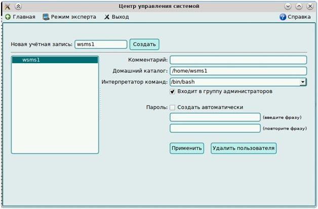
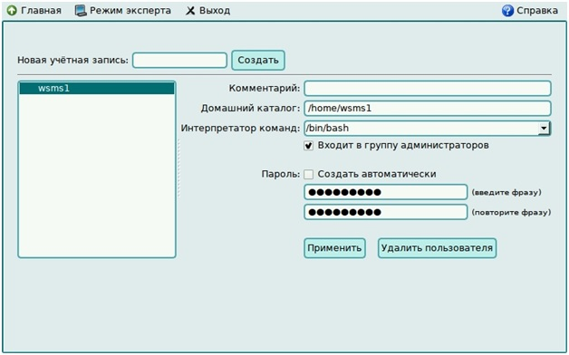
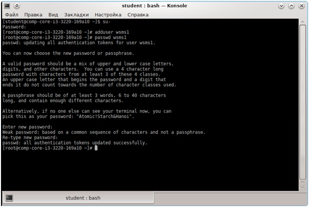

Задание 1.
Создать пользователя с использованием графической оболочки.
Открываем «Центр управления системой».

Вводим новый логин и нажимаем создать.
Далее,выбрав созданный логин, устанавливаем ему пароль.

Задание 2.
Создать пользователя в терминале программой adduser.
1. Открывание Konsole
2. Вход в режим суперпользователяс помощью команды su-
3. Добавление нового пользователя с помощью программы adduser
4. Установление пароля для нового пользователя с помощью программы passwd

На главную